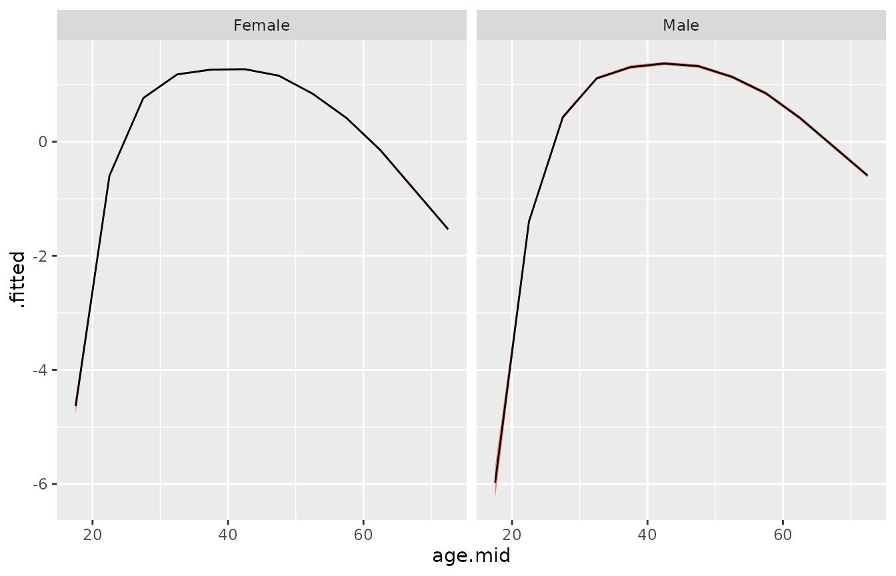
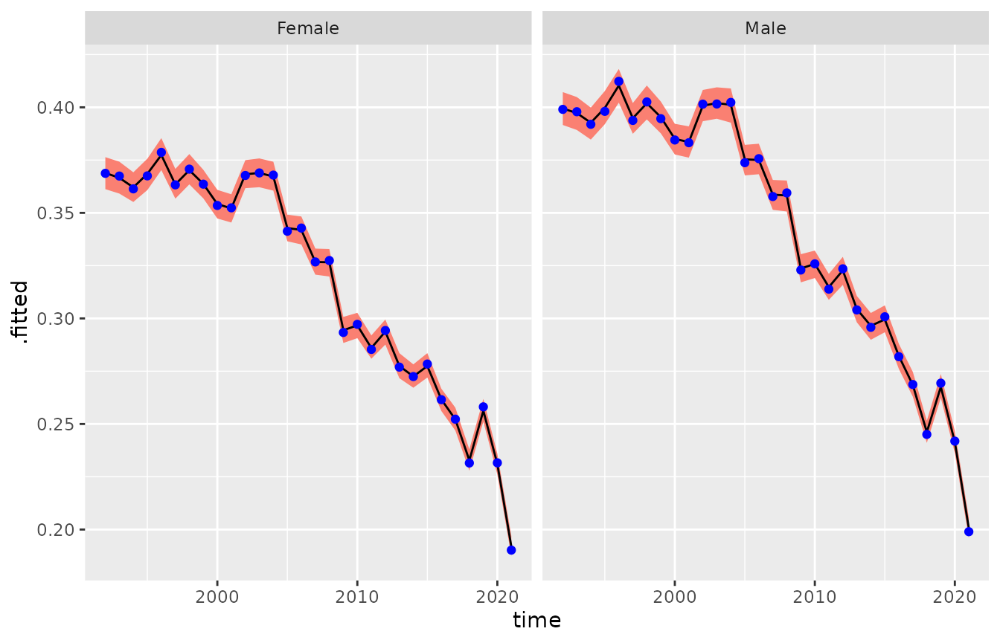

vig1_nz
vig1_nz.RmdIn this example, we have the number of divorce events and person-years of exposure for New Zealand by age groups (15-19, 20-24, …, 65+), sex, and year (1992, …, 2021). The values of the person-years of exposure are quite large and thus sampling error is not very large.
library(BayesRates)
library(dplyr)
#>
#> Attaching package: 'dplyr'
#> The following objects are masked from 'package:stats':
#>
#> filter, lag
#> The following objects are masked from 'package:base':
#>
#> intersect, setdiff, setequal, union
library(ggplot2)‘nz_divorces’ is an existing data frame in the BayesRates
package with four columns:
(1) ‘age’: a factor variable with levels being
“15-19”,“20-24”,…,“60-64”,“65+”;
(2) ‘sex’: a character variable with possible values being “Female” and
“Male”;
(3) ‘time’: an integer variable with possible values being
1992,…,2021;
(4) ‘nevent’: a numeric variable recording the number of divorce
events.
head(nz_divorces)
#> # A tibble: 6 × 4
#> age sex time nevent
#> <fct> <chr> <int> <dbl>
#> 1 15-19 Female 1992 12
#> 2 15-19 Female 1993 6
#> 3 15-19 Female 1994 9
#> 4 15-19 Female 1995 6
#> 5 15-19 Female 1996 3
#> 6 15-19 Female 1997 9‘nz_population’ is an existing data frame in the BayesRates
package with four columns:
(1) ‘age’: a factor variable with levels being
“15-19”,“20-24”,…,“60-64”,“65+”;
(2) ‘sex’: a character variable with possible values being “Female”,
“Male”;
(3) ‘time’: an integer variable with possible values being
1992,…,2021;
(4) ‘py’: a numeric variable recording person-years of exposure.
head(nz_population)
#> # A tibble: 6 × 4
#> age sex time py
#> <fct> <chr> <int> <dbl>
#> 1 15-19 Female 1992 139500
#> 2 15-19 Female 1993 135510
#> 3 15-19 Female 1994 133010
#> 4 15-19 Female 1995 131960
#> 5 15-19 Female 1996 132490
#> 6 15-19 Female 1997 132590The person-years of exposure are quite large, and correspondingly the numbers of divorces are not small.
summary(nz_population["py"])
#> py
#> Min. : 68470
#> 1st Qu.:130178
#> Median :145890
#> Mean :151497
#> 3rd Qu.:160290
#> Max. :434780
table(nz_divorces["nevent"])
#> nevent
#> 0 3 6 9 12 36 54 63 66 69 72 75 78 84 96 99
#> 30 15 11 3 1 1 2 1 1 1 2 1 1 2 2 1
#> 102 108 111 114 120 123 129 132 135 138 141 144 147 150 153 156
#> 2 2 1 2 1 3 2 6 4 2 1 2 3 3 1 3
#> 159 162 165 168 171 174 177 183 186 189 195 207 219 222 225 228
#> 1 1 3 3 1 4 1 1 1 1 2 4 2 1 3 3
#> 237 240 243 252 255 258 261 270 273 276 279 282 285 288 291 294
#> 1 1 2 2 1 2 2 2 1 3 2 2 3 1 3 2
#> 297 303 306 309 312 315 318 324 327 330 339 342 348 351 354 357
#> 2 1 2 1 3 2 3 1 1 1 1 1 1 2 2 1
#> 360 366 369 372 375 378 381 384 387 393 396 402 405 408 411 414
#> 2 2 1 1 2 2 2 4 1 1 1 2 1 1 1 1
#> 417 420 423 426 429 432 435 438 441 450 453 459 471 480 483 489
#> 1 1 1 2 2 2 2 3 1 2 2 1 1 1 1 1
#> 498 501 504 507 510 513 519 525 528 531 534 537 543 546 549 552
#> 1 4 1 1 1 1 1 1 1 1 1 1 2 2 1 2
#> 555 558 564 567 570 573 582 585 594 597 600 603 606 609 618 621
#> 1 2 3 1 2 1 3 3 1 1 1 1 1 1 1 1
#> 630 633 636 639 645 648 654 657 663 675 681 687 690 693 699 705
#> 2 2 1 1 2 1 1 1 1 1 1 3 1 1 1 1
#> 708 711 723 726 729 732 750 756 759 765 774 786 801 804 810 813
#> 2 1 1 1 1 2 2 2 1 1 2 1 1 2 1 1
#> 819 822 828 831 834 837 840 846 849 852 855 858 864 867 870 873
#> 1 1 1 2 1 2 1 1 3 1 3 1 2 1 3 2
#> 876 879 882 888 903 906 909 912 915 924 930 933 942 945 948 954
#> 1 2 1 1 1 1 1 1 3 3 1 2 1 1 1 1
#> 957 960 969 975 978 990 996 1005 1008 1011 1014 1017 1026 1029 1032 1041
#> 1 1 1 1 1 1 1 2 3 3 1 2 3 1 1 1
#> 1044 1047 1050 1053 1059 1065 1074 1077 1080 1086 1089 1092 1095 1098 1101 1104
#> 2 2 2 2 2 1 1 2 1 1 1 1 1 3 1 4
#> 1110 1113 1116 1122 1125 1128 1134 1146 1152 1161 1164 1185 1191 1194 1203 1206
#> 2 4 1 1 2 1 2 1 1 3 1 1 1 1 1 1
#> 1209 1212 1215 1224 1227 1233 1236 1239 1254 1257 1260 1263 1266 1269 1278 1281
#> 1 3 2 1 1 1 2 3 3 1 1 2 1 2 2 2
#> 1287 1290 1299 1317 1326 1338 1344 1347 1359 1362 1368 1383 1386 1389 1392 1395
#> 2 1 1 1 1 1 1 1 1 1 2 1 2 2 1 1
#> 1398 1407 1410 1419 1422 1425 1428 1446 1449 1452 1461 1470 1473 1482 1485 1494
#> 1 3 1 3 1 2 1 1 1 2 2 2 1 1 4 2
#> 1500 1503 1506 1515 1518 1521 1524 1530 1533 1542 1551 1560 1563 1572 1578 1587
#> 1 1 3 1 1 1 1 2 1 3 2 2 3 1 1 2
#> 1590 1593 1596 1608 1611 1614 1623 1626 1647 1656 1659 1662 1674 1680 1683 1689
#> 3 1 1 1 4 2 1 2 1 1 1 2 1 1 1 3
#> 1692 1695 1701 1710 1713 1719 1722 1725 1743 1755 1761 1767 1776 1785 1791 1794
#> 1 1 1 1 1 1 1 1 2 3 1 1 1 1 1 1
#> 1797 1806 1827 1833 1839 1842 1845 1851 1857 1860 1872 1875 1878 1884 1893 1896
#> 2 3 1 1 1 3 1 1 1 1 1 1 1 1 1 1
#> 1902 1908 1911 1914 1926 1932 1935 1938 1956 1959 1965 1968 1971 1974 1980 1992
#> 1 1 2 1 1 1 1 1 1 1 1 1 2 1 1 1
#> 1998 2001 2013 2025 2028 2037 2040 2046 2052 2055 2061 2079
#> 1 1 1 1 1 1 1 1 1 2 1 1We keep the subsets of ‘nz_divorces’ and ‘nz_population’ for 2020, and remove the ‘time’ variable. To do this, we use the ‘%>%’ operator from the ‘dplyr’ package that turns ‘x %>% f(y)’ into ‘f(x,y)’ so that the result from one step is piped into the next step.
nz_divorce_2020 <- nz_divorces %>%
filter(time == 2020) %>%
select(-time)
nz_popn_2020 <- nz_population %>%
filter(time == 2020) %>%
select(-time)We use the smooth_age function to smooth the observed unisex rates across age. The parameter nevent_df specifies the data frame for numbers of events, and the parameter py_df specifies the data frame for person years of exposure. When we work with age groups, we also need to specify the parameter age_width_df which is a data frame recording the width of each age group, and the parameter age_min which is the starting age. As input to the parameter age_width_df, we use ‘nz_age_width_df’, an existing data frame in the BayesRates package that gives the width of each age group.
head(nz_age_width_df)
#> # A tibble: 6 × 2
#> age width
#> <fct> <dbl>
#> 1 15-19 5
#> 2 20-24 5
#> 3 25-29 5
#> 4 30-34 5
#> 5 35-39 5
#> 6 40-44 5
res_age <- smooth_age(nevent_df = nz_divorce_2020,
py_df = nz_popn_2020,
age_width_df = nz_age_width_df,
age_min = 15)Inside the smooth_age function, numbers of events and person-years of exposure for females and males are aggregated. The default model for the age effects on log rates is a spline model with degrees of freedom equal to max(ceiling(0.7 * n), 4), where n is the number of age groups. Here we have n=11, hence the degrees of freedom is 8.
We print the model specification as follows.
res_age
#> --- Object of class "BayesRates_results" ---
#>
#> nevent ~ Poisson(rate * py)
#> log(rate) = age_effect
#> age_effect ~ Spline()
#>
#> agevar: age
#> byvar: <none>
#> n_draw: 1000The number of events is modeled by a Poisson distribution with mean equal to an underlying rate multiplied by person-years of exposure. The logarithm of the underlying rate equals the age effect, which is modeled by a spline model. The model for the age effect is Spline(). The value of ‘agevar’ is ‘age’, indicating that the name of the variable that records age is ‘age’. The value of ‘byvar’ is empty, indicating that we fit a single model (not classified by any variable). The value of ‘ndraw’ is 1000, indicating that the number of posterior draws is 1000 (default value).
We use the components function to extract model-based estimates of rates disaggregated by age.
components(res_age, what = "rates")
#> # A tibble: 11 × 6
#> age age.mid .fitted .lower .upper .probability
#> <fct> <dbl> <dbl> <dbl> <dbl> <list>
#> 1 15-19 17.5 0.0000201 0.0000106 0.0000388 <dbl [1,000]>
#> 2 20-24 22.5 0.000495 0.000434 0.000564 <dbl [1,000]>
#> 3 25-29 27.5 0.00266 0.00253 0.00280 <dbl [1,000]>
#> 4 30-34 32.5 0.00523 0.00504 0.00542 <dbl [1,000]>
#> 5 35-39 37.5 0.00629 0.00610 0.00651 <dbl [1,000]>
#> 6 40-44 42.5 0.00702 0.00684 0.00722 <dbl [1,000]>
#> 7 45-49 47.5 0.00724 0.00702 0.00748 <dbl [1,000]>
#> 8 50-54 52.5 0.00638 0.00618 0.00658 <dbl [1,000]>
#> 9 55-59 57.5 0.00495 0.00475 0.00513 <dbl [1,000]>
#> 10 60-64 62.5 0.00326 0.00307 0.00346 <dbl [1,000]>
#> 11 65+ 72.5 0.00121 0.00114 0.00130 <dbl [1,000]>In the returned data frame, the variable ‘age.mid’ gives the middle point for each age group, the variable ‘.fitted’ gives the point estimate of the rate, the variables ‘.lower’ and ‘.upper’ give the lower and upper bounds of the credible interval of the rate (95% credible interval by default), and the variable ‘.probability’ gives a list containing the posterior draws of the rate.
We also use the components function to extract model-based estimates of age effects.
components(res_age, what = "age_effect")
#> # A tibble: 11 × 6
#> age age.mid .fitted .lower .upper .probability
#> <fct> <dbl> <dbl> <dbl> <dbl> <list>
#> 1 15-19 17.5 -4.69 -5.27 -4.10 <dbl [1,000]>
#> 2 20-24 22.5 -1.49 -1.60 -1.37 <dbl [1,000]>
#> 3 25-29 27.5 0.195 0.109 0.275 <dbl [1,000]>
#> 4 30-34 32.5 0.871 0.799 0.942 <dbl [1,000]>
#> 5 35-39 37.5 1.06 0.988 1.13 <dbl [1,000]>
#> 6 40-44 42.5 1.16 1.10 1.24 <dbl [1,000]>
#> 7 45-49 47.5 1.20 1.13 1.27 <dbl [1,000]>
#> 8 50-54 52.5 1.07 1.00 1.14 <dbl [1,000]>
#> 9 55-59 57.5 0.816 0.743 0.886 <dbl [1,000]>
#> 10 60-64 62.5 0.400 0.313 0.489 <dbl [1,000]>
#> 11 65+ 72.5 -0.587 -0.677 -0.502 <dbl [1,000]>We use the augment function to combine the observed data with the model-based estimates of rates.
rates_age_df <- augment(res_age)
head(rates_age_df)
#> # A tibble: 6 × 10
#> age sex nevent py age.mid .fitted .lower .upper .probability
#> <fct> <chr> <dbl> <dbl> <dbl> <dbl> <dbl> <dbl> <list>
#> 1 15-19 Female 0 154480 17.5 0.0000201 0.0000106 0.0000388 <dbl [1,000]>
#> 2 15-19 Male 0 162910 17.5 0.0000201 0.0000106 0.0000388 <dbl [1,000]>
#> 3 20-24 Female 111 163370 22.5 0.000495 0.000434 0.000564 <dbl [1,000]>
#> 4 20-24 Male 54 175600 22.5 0.000495 0.000434 0.000564 <dbl [1,000]>
#> 5 25-29 Female 639 187000 27.5 0.00266 0.00253 0.00280 <dbl [1,000]>
#> 6 25-29 Male 429 195310 27.5 0.00266 0.00253 0.00280 <dbl [1,000]>
#> # ℹ 1 more variable: .observed <dbl>Since the model has been constructed for unisex rate, the values of ‘.fitted’, ‘.lower’, ‘.upper’ and ‘.probability’ are the same for males and females at the same age.
We plot the model-based estimates of rates (including point estimates and credible intervals) and the observed rates (in blue), separately for each sex.
ggplot(rates_age_df,
aes(x = age.mid, ymin = .lower, y = .fitted, ymax = .upper)) +
facet_wrap(vars(sex)) +
geom_ribbon(fill = "salmon") +
geom_line() +
geom_point(aes(y = .observed), col = "blue")
We use the total_rate function to obtain estimates of the unisex total rates.
total_rate(res_age)
#> # A tibble: 1 × 5
#> .fitted .lower .upper .probability .observed
#> <dbl> <dbl> <dbl> <list> <dbl>
#> 1 0.236 0.232 0.239 <dbl [1,000]> 0.236We next fit a separate model for each sex. To do this, we set the parameter byvar in the smooth_age function to “sex”.
res_age_bysex <- smooth_age(nevent_df = nz_divorce_2020,
py_df = nz_popn_2020,
age_width_df = nz_age_width_df,
age_min = 15,
byvar = "sex")
res_age_bysex
#> --- Object of class "BayesRates_results" ---
#>
#> nevent ~ Poisson(rate * py)
#> log(rate) = age_effect
#> age_effect ~ Spline()
#>
#> agevar: age
#> byvar: sex
#> n_draw: 1000We combine observed data with model-based estimates of rates, plot the results, and obtain estimates of total rates.
rates_age_bysex_df <- augment(res_age_bysex)
head(rates_age_bysex_df)
#> # A tibble: 6 × 10
#> age sex nevent py age.mid .fitted .lower .upper .probability
#> <fct> <chr> <dbl> <dbl> <dbl> <dbl> <dbl> <dbl> <list>
#> 1 15-19 Female 0 154480 17.5 0.0000364 0.0000189 0.0000682 <dbl [1,000]>
#> 2 15-19 Male 0 162910 17.5 0.0000220 0.0000111 0.0000413 <dbl [1,000]>
#> 3 20-24 Female 111 163370 22.5 0.000674 0.000568 0.000787 <dbl [1,000]>
#> 4 20-24 Male 54 175600 22.5 0.000326 0.000266 0.000409 <dbl [1,000]>
#> 5 25-29 Female 639 187000 27.5 0.00322 0.00301 0.00345 <dbl [1,000]>
#> 6 25-29 Male 429 195310 27.5 0.00204 0.00189 0.00221 <dbl [1,000]>
#> # ℹ 1 more variable: .observed <dbl>
ggplot(rates_age_bysex_df,
aes(x = age.mid, ymin = .lower, y = .fitted, ymax = .upper)) +
facet_wrap(vars(sex)) +
geom_ribbon(fill = "salmon") +
geom_line() +
geom_point(aes(y = .observed), col = "blue")
total_rate(res_age_bysex)
#> # A tibble: 2 × 6
#> sex .fitted .lower .upper .probability .observed
#> <chr> <dbl> <dbl> <dbl> <list> <dbl>
#> 1 Female 0.231 0.227 0.237 <dbl [1,000]> 0.232
#> 2 Male 0.242 0.237 0.248 <dbl [1,000]> 0.242We can also change the model specification. For example, we can use a spline model with 9 degrees of freedom to smooth the observed rates across age for each sex.
res_age_bysex2 <- smooth_age(nevent_df = nz_divorce_2020,
py_df = nz_popn_2020,
age_width_df = nz_age_width_df,
age_min = 15,
byvar = "sex",
spec_age = Spline(df = 9))
res_age_bysex2
#> --- Object of class "BayesRates_results" ---
#>
#> nevent ~ Poisson(rate * py)
#> log(rate) = age_effect
#> age_effect ~ Spline(df=9)
#>
#> agevar: age
#> byvar: sex
#> n_draw: 1000
rates_age_bysex2_df <- augment(res_age_bysex2)
head(rates_age_bysex2_df)
#> # A tibble: 6 × 10
#> age sex nevent py age.mid .fitted .lower .upper .probability
#> <fct> <chr> <dbl> <dbl> <dbl> <dbl> <dbl> <dbl> <list>
#> 1 15-19 Female 0 154480 17.5 0.0000305 0.0000157 0.0000562 <dbl>
#> 2 15-19 Male 0 162910 17.5 0.0000160 0.00000769 0.0000324 <dbl>
#> 3 20-24 Female 111 163370 22.5 0.000632 0.000533 0.000758 <dbl>
#> 4 20-24 Male 54 175600 22.5 0.000309 0.000244 0.000385 <dbl>
#> 5 25-29 Female 639 187000 27.5 0.00338 0.00317 0.00364 <dbl>
#> 6 25-29 Male 429 195310 27.5 0.00212 0.00194 0.00230 <dbl>
#> # ℹ 1 more variable: .observed <dbl>
ggplot(rates_age_bysex2_df,
aes(x = age.mid, ymin = .lower, y = .fitted, ymax = .upper)) +
facet_wrap(vars(sex)) +
geom_ribbon(fill = "salmon") +
geom_line() +
geom_point(aes(y = .observed), col = "blue")
total_rate(res_age_bysex2)
#> # A tibble: 2 × 6
#> sex .fitted .lower .upper .probability .observed
#> <chr> <dbl> <dbl> <dbl> <list> <dbl>
#> 1 Female 0.232 0.226 0.236 <dbl [1,000]> 0.232
#> 2 Male 0.242 0.237 0.247 <dbl [1,000]> 0.242We can also use a second order random walk model to smooth the observed rates across age for each sex.
res_age_bysex3 <- smooth_age(nevent_df = nz_divorce_2020,
py_df = nz_popn_2020,
age_width_df = nz_age_width_df,
age_min = 15,
byvar = "sex",
spec_age = RW2())
res_age_bysex3
#> --- Object of class "BayesRates_results" ---
#>
#> nevent ~ Poisson(rate * py)
#> log(rate) = age_effect
#> age_effect ~ RW2()
#>
#> agevar: age
#> byvar: sex
#> n_draw: 1000
rates_age_bysex3_df <- augment(res_age_bysex3)
head(rates_age_bysex3_df)
#> # A tibble: 6 × 10
#> age sex nevent py age.mid .fitted .lower .upper .probability
#> <fct> <chr> <dbl> <dbl> <dbl> <dbl> <dbl> <dbl> <list>
#> 1 15-19 Female 0 154480 17.5 0.0000191 0.00000568 0.0000612 <dbl>
#> 2 15-19 Male 0 162910 17.5 0.0000151 0.00000550 0.0000430 <dbl>
#> 3 20-24 Female 111 163370 22.5 0.000655 0.000540 0.000785 <dbl>
#> 4 20-24 Male 54 175600 22.5 0.000298 0.000235 0.000386 <dbl>
#> 5 25-29 Female 639 187000 27.5 0.00341 0.00316 0.00369 <dbl>
#> 6 25-29 Male 429 195310 27.5 0.00218 0.00199 0.00239 <dbl>
#> # ℹ 1 more variable: .observed <dbl>
ggplot(rates_age_bysex3_df,
aes(x = age.mid, ymin = .lower, y = .fitted, ymax = .upper)) +
facet_wrap(vars(sex)) +
geom_ribbon(fill = "salmon") +
geom_line() +
geom_point(aes(y = .observed), col = "blue")
total_rate(res_age_bysex3)
#> # A tibble: 2 × 6
#> sex .fitted .lower .upper .probability .observed
#> <chr> <dbl> <dbl> <dbl> <list> <dbl>
#> 1 Female 0.231 0.227 0.237 <dbl [1,000]> 0.232
#> 2 Male 0.242 0.237 0.247 <dbl [1,000]> 0.242Next, for each sex, we use data for all years and smooth the observed rates across age and time. By default, we model the age effects on log rates using a spline model with degrees of freedom equal to max(ceiling(0.7 * n), 4), where n is the number of age groups, and allow the time effects on log rates to vary for different age groups. A correlated first-order random walk is used to model the time effects, where the correlation is higher for age groups that are closer.
res_agetime_bysex <- smooth_agetime(nevent_df = nz_divorces,
py_df = nz_population,
age_width_df = nz_age_width_df,
age_min = 15,
byvar = "sex")
res_agetime_bysex
#> --- Object of class "BayesRates_results" ---
#>
#> nevent ~ Poisson(rate * py)
#> log(rate) = age_effect + time_effect
#> age_effect ~ Spline()
#> time_effect ~ TimeVarying()
#>
#> agevar: age
#> timevar: time
#> byvar: sex
#> n_draw: 1000In the model specification, the logarithm of the underlying rate equals the age effect plus the time effect. The model for the time effect is TimeVarying(). The value of ‘timevar’ is ‘time’, indicating that the name of the variable that records time is ‘time’. The value of ‘byvar’ is ‘sex’, indicating that a model is fitted separately for each sex.
We use the augment function to combine data and model-based estimates of rates, and plot the results.
rates_agetime_bysex_df <- augment(res_agetime_bysex)
head(rates_agetime_bysex_df)
#> # A tibble: 6 × 11
#> age sex time nevent py age.mid .fitted .lower .upper .probability
#> <fct> <chr> <int> <dbl> <dbl> <dbl> <dbl> <dbl> <dbl> <list>
#> 1 15-19 Female 1992 12 139500 17.5 5.24e-5 4.23e-5 6.38e-5 <dbl>
#> 2 15-19 Female 1993 6 135510 17.5 4.98e-5 4.04e-5 6.01e-5 <dbl>
#> 3 15-19 Female 1994 9 133010 17.5 4.69e-5 3.85e-5 5.68e-5 <dbl>
#> 4 15-19 Female 1995 6 131960 17.5 4.66e-5 3.88e-5 5.71e-5 <dbl>
#> 5 15-19 Female 1996 3 132490 17.5 4.55e-5 3.79e-5 5.57e-5 <dbl>
#> 6 15-19 Female 1997 9 132590 17.5 4.40e-5 3.63e-5 5.33e-5 <dbl>
#> # ℹ 1 more variable: .observed <dbl>
ggplot(rates_agetime_bysex_df, aes(x = age.mid)) +
facet_wrap(vars(time)) +
geom_ribbon(aes(ymin = .lower, ymax = .upper, fill = sex),
alpha = 0.6) +
geom_line(aes(y = .fitted, color = sex)) +
geom_point(aes(y = .observed, color = sex),
size = 0.5)
We use the components function to extract the model-based estimates of age effects, and plot them.
age_effect <- components(res_agetime_bysex, what = "age_effect")
head(age_effect)
#> # A tibble: 6 × 7
#> sex age age.mid .fitted .lower .upper .probability
#> <chr> <fct> <dbl> <dbl> <dbl> <dbl> <list>
#> 1 Female 15-19 17.5 -4.64 -4.78 -4.50 <dbl [1,000]>
#> 2 Female 20-24 22.5 -0.593 -0.616 -0.570 <dbl [1,000]>
#> 3 Female 25-29 27.5 0.768 0.749 0.787 <dbl [1,000]>
#> 4 Female 30-34 32.5 1.18 1.17 1.20 <dbl [1,000]>
#> 5 Female 35-39 37.5 1.27 1.25 1.28 <dbl [1,000]>
#> 6 Female 40-44 42.5 1.27 1.26 1.29 <dbl [1,000]>
ggplot(age_effect,
aes(x = age.mid, ymin = .lower, y = .fitted, ymax = .upper)) +
facet_wrap(vars(sex)) +
geom_ribbon(fill = "salmon") +
geom_line()
We use the components function to extract the model-based estimates of time effects, and plot them.
time_effect <- components(res_agetime_bysex, what = "time_effect")
head(time_effect)
#> # A tibble: 6 × 8
#> sex age age.mid time .fitted .lower .upper .probability
#> <chr> <fct> <dbl> <int> <dbl> <dbl> <dbl> <list>
#> 1 Female 15-19 17.5 1992 0.640 0.475 0.805 <dbl [1,000]>
#> 2 Female 15-19 17.5 1993 0.585 0.433 0.744 <dbl [1,000]>
#> 3 Female 15-19 17.5 1994 0.535 0.385 0.676 <dbl [1,000]>
#> 4 Female 15-19 17.5 1995 0.530 0.388 0.663 <dbl [1,000]>
#> 5 Female 15-19 17.5 1996 0.505 0.369 0.634 <dbl [1,000]>
#> 6 Female 15-19 17.5 1997 0.466 0.333 0.587 <dbl [1,000]>
ggplot(time_effect, aes(x = age.mid)) +
facet_wrap(vars(time)) +
geom_ribbon(aes(ymin = .lower, ymax = .upper, fill = sex),
alpha = 0.6) +
geom_line(aes(y = .fitted, color = sex))
We obtain estimates of the total rates and plot them.
total_rate = total_rate(res_agetime_bysex)
total_rate
#> # A tibble: 60 × 7
#> sex time .fitted .lower .upper .probability .observed
#> <chr> <int> <dbl> <dbl> <dbl> <list> <dbl>
#> 1 Female 1992 0.369 0.361 0.376 <dbl [1,000]> 0.369
#> 2 Female 1993 0.367 0.359 0.374 <dbl [1,000]> 0.367
#> 3 Female 1994 0.362 0.355 0.369 <dbl [1,000]> 0.361
#> 4 Female 1995 0.368 0.361 0.376 <dbl [1,000]> 0.368
#> 5 Female 1996 0.377 0.370 0.385 <dbl [1,000]> 0.379
#> 6 Female 1997 0.363 0.357 0.371 <dbl [1,000]> 0.363
#> 7 Female 1998 0.370 0.363 0.378 <dbl [1,000]> 0.371
#> 8 Female 1999 0.364 0.357 0.370 <dbl [1,000]> 0.364
#> 9 Female 2000 0.354 0.347 0.361 <dbl [1,000]> 0.354
#> 10 Female 2001 0.352 0.345 0.359 <dbl [1,000]> 0.352
#> # ℹ 50 more rows
ggplot(total_rate,
aes(x = time, y = .fitted, ymin = .lower, ymax = .upper)) +
facet_wrap(vars(sex)) +
geom_ribbon(fill = "salmon") +
geom_line() +
geom_point(aes(y = .observed), col = "blue")